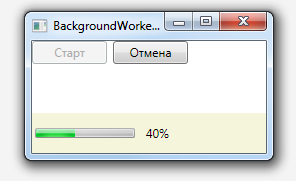

BackgroundWoker предоставляет следующие основные методы:
RunWorkerAsync - служит для запуска потока.
DoWork - вызывается при старте потока. В этом методе обычно выполняется длительное вычисление, которое будет выполняться в отдельном потоке.
RunWorkerCompleted - вызывается по завершении выполнения потока и если поддерживается досрочное завершение при досрочном завершении.
ProgressChanged - может быть использован для отслеживания прогресса выполнения фонового потока.
CancelAsync - можно использовать для досрочного завершения фоновой операции. CancelAsync устанавливает соответствующее значение свойства CancellationPending. Фоновый код, поддерживающий досрочное завершение, проверяет значение этого свойства и, как только оно становится равным True, завершает свое выполнение.
Объявление BackgroundWorker в XAML коде.
Сначала нужно указать пространство имен System.ComponentModel, а дальше создать экземпляр BackgroundWorker в разделе ресурсов окна.
- <Window.Resources>
- <my:BackgroundWorker
- x:Key="backgroundWoker"
- WorkerReportsProgress="True"
- WorkerSupportsCancellation="True"
- DoWork="BackgroundWorker_DoWork"
- ProgressChanged="BackgroundWorker_ProgressChanged"
- RunWorkerCompleted="BackgroundWorker_RunWorkerCompleted"
- >
- </my:BackgroundWorker>
- </Window.Resources>
* This source code was highlighted with Source Code Highlighter.
Теперь для получения доступа к ресурсу в коде прописываем в кострукторе окна и не забываем про uses System.ComponentModel:
- public partial class MainWindow : Window
- {
- private BackgroundWorker backgroundWorker;
- public MainWindow()
- {
- InitializeComponent();
- backgroundWorker = (BackgroundWorker)this.FindResource("backgroundWoker");
- }
- ...
* This source code was highlighted with Source Code Highlighter.
Отслеживание прогресса
Мы установили BackgroundWoker.WokerReportsProgress в True для возможности отслеживания прогресса в выполнении. В коде события DoWork мы должны вызвать метод ReportProgress() и указать процент готовности. При каждом вызове ReportProgress() объект BackgroundWoker инициирует событие ProgressChanged. Это событие считывает процент готовности и обновляет интерфейс. Важно, что событие ProgressChanged инициировано в потоке пользовательского интерфейса, поэтому никаких дополнительных действий предпринимать не надо.
Поддержка отмены
Для поддержки отмены добавим кнопку "Отмена" и также мы уже указали явно в XAML коде WorkerSupportsCancellation="True" . При нажатии на кнопку в событии Click вызываем метод BackgroundWorker.CancelAsync(), теперь в коде DoWork при проверке if (worker.CancellationPending == true) мы просто возвращаем управление ничего не делая. Важно, что даже при отмене генерируется событие RunWokerCompleted, поэтому это нужно предусмотреть и обработать соотвественно.
Дополнения
В код, полный текст которого приведен ниже, добавлено изменение видимости ProgressBar в зависимости от логики и доступность кнопок "Старт" и "Отмена". Т.е. пока процесс не запушен кнопка "Отмена" не доступна, когда процесс запущен, то доступна кнопка "Отмена", а кнопка "Старт" становиться не доступна.

Вот, полный текст XAML файла
- <Window x:Class="BWTest.MainWindow"
- xmlns="http://schemas.microsoft.com/winfx/2006/xaml/presentation"
- xmlns:x="http://schemas.microsoft.com/winfx/2006/xaml"
- xmlns:my="clr-namespace:System.ComponentModel;assembly=System"
- Title="BackgroundWorker тест" Height="150" Width="250">
- <Window.Resources>
- <my:BackgroundWorker
- x:Key="backgroundWoker"
- WorkerReportsProgress="True"
- WorkerSupportsCancellation="True"
- DoWork="BackgroundWorker_DoWork"
- ProgressChanged="BackgroundWorker_ProgressChanged"
- RunWorkerCompleted="BackgroundWorker_RunWorkerCompleted"
- >
- </my:BackgroundWorker>
- </Window.Resources>
- <Grid>
- <Grid.RowDefinitions>
- <RowDefinition Height="100*" MinHeight="70"></RowDefinition>
- <RowDefinition Height="40*" MinHeight="40"></RowDefinition>
- </Grid.RowDefinitions>
- <Button Content="Старт" Height="23" HorizontalAlignment="Left" Name="btnStart" VerticalAlignment="Top" Width="75" Click="btnStart_Click" />
- <Button Content="Отмена" Height="23" HorizontalAlignment="Left" Margin="81,0,0,0" Name="btnCancel" VerticalAlignment="Top" Width="75" Click="btnCancel_Click" IsEnabled="False"/>
- <DockPanel Grid.Row="1" Background="Beige" VerticalAlignment="Bottom" HorizontalAlignment="Stretch">
- <StatusBar DockPanel.Dock="Left" Height="40" MinHeight="30" HorizontalAlignment="Left" VerticalAlignment="Center" Name="statusBar" Background="Beige">
- <StatusBarItem>
- <ProgressBar Height="10" MinHeight="10" Name="progressBar" Width="100" Visibility="Hidden" />
- </StatusBarItem>
- <StatusBarItem MinHeight="30">
- <Label Height="30" Name="txtProgress" HorizontalAlignment="Left" VerticalAlignment="Center" VerticalContentAlignment="Center" Width="100" />
- </StatusBarItem>
- </StatusBar>
- </DockPanel>
- </Grid>
- </Window>
* This source code was highlighted with Source Code Highlighter.
И полный текст кода на C#
- using System.Windows;
- using System.ComponentModel;
-
- namespace BWTest
- {
-
- public partial class MainWindow : Window
- {
- private BackgroundWorker backgroundWorker;
- public MainWindow()
- {
- InitializeComponent();
- backgroundWorker = (BackgroundWorker)this.FindResource("backgroundWoker");
- }
-
- private void BackgroundWorker_ProgressChanged(object sender, System.ComponentModel.ProgressChangedEventArgs e)
- {
- txtProgress.Content = (e.ProgressPercentage.ToString() + "%");
- progressBar.Value = e.ProgressPercentage;
- }
-
- private void BackgroundWorker_DoWork(object sender, System.ComponentModel.DoWorkEventArgs e)
- {
- BackgroundWorker worker = sender as BackgroundWorker;
- for (int i = 1; (i <= 10); i++)
- {
- if ((worker.CancellationPending == true))
- {
- e.Cancel = true;
- break;
- }
- else
- {
- System.Threading.Thread.Sleep(500);
- worker.ReportProgress((i * 10));
- }
- }
- }
-
- private void BackgroundWorker_RunWorkerCompleted(object sender, System.ComponentModel.RunWorkerCompletedEventArgs e)
- {
- if ((e.Cancelled == true))
- {
- this.progressBar.Visibility = Visibility.Hidden;
- this.txtProgress.Content = "Отмена!";
- }
-
- else if (!(e.Error == null))
- {
- this.progressBar.Visibility = Visibility.Hidden;
- this.txtProgress.Content = ("Ошибка: " + e.Error.Message);
- }
-
- else
- {
- this.txtProgress.Content = "Готово!";
- this.progressBar.Visibility = Visibility.Hidden;
- btnCancel.IsEnabled = false;
- btnStart.IsEnabled =true;
- }
-
- }
-
- private void btnStart_Click(object sender, RoutedEventArgs e)
- {
- btnStart.IsEnabled = false;
- btnCancel.IsEnabled = true;
- progressBar.Value = 0;
- progressBar.Visibility = Visibility.Visible;
- backgroundWorker.RunWorkerAsync();
-
- }
-
- private void btnCancel_Click(object sender, RoutedEventArgs e)
- {
- if (backgroundWorker.WorkerSupportsCancellation == true)
- {
- btnStart.IsEnabled = true;
- backgroundWorker.CancelAsync();
- btnCancel.IsEnabled = false;
- }
- }
- }
- }
* This source code was highlighted with Source Code Highlighter.